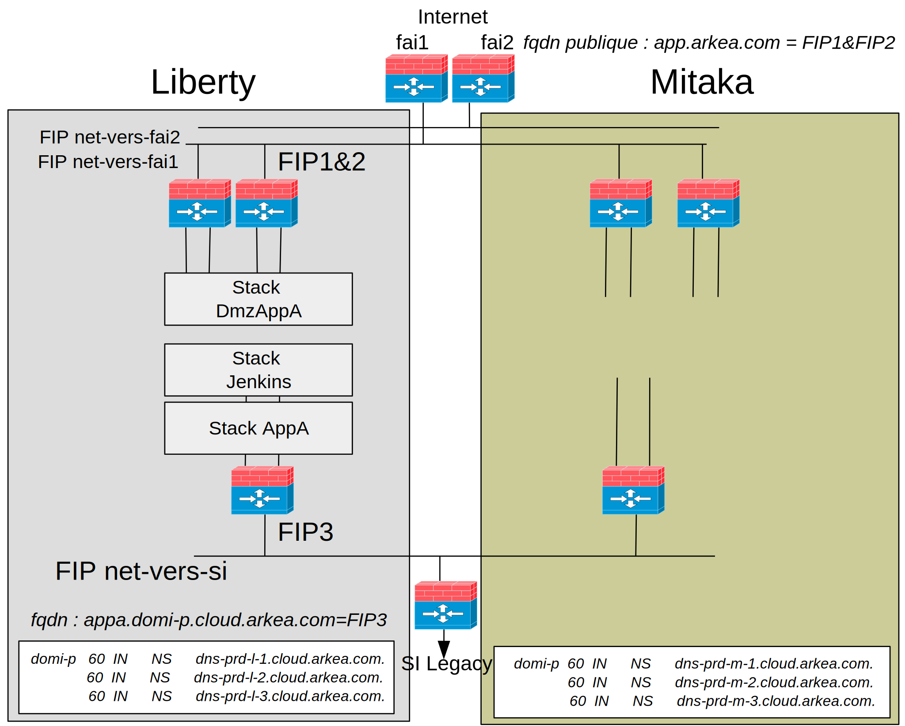

Pourquoi le cloud prive
Banque : réglementaire, image de marque...
Nos propres Datacenter : réutilisation des locaux
Expertise interne : capitalisation humaine
Intégration au sein du SI : proximité physique du mainframe, des data
Réflexions : Juin 2016
Ambition d'héberger l'ensemble des développements internes : 1000 applications
Volonté d'avoir la dernière version de OpenStack : Mitaka
Minimum d'interruption de service : applications en production
Distribution commerciale ?
- Designate non supporté
- Topologie réseau spécifique : interfaces multiples du à la segmentation de notre topologie réseau physique
- Internet non routé sur notre backbone
Rolling upgrade vs Création d'une nouvelle plate-forme ?
Contrainte utilisateurs : pas d'interruption de service
Summit Austin : le rolling upgrade est encore trés expérimental
Rolling Upgrade : potentiellement coupure de service et rollback complexe
Nouvelle plateforme : maîtrise de ce type de déploiement
La taille de notre cloud privé permet ce mode opératoire
Possibilité d'ajouter de nouvelles fonctionnalités sans impact utilisateur
Plate-forme Mitaka
Serveurs :
- Centos rdo
- Server Dell R630 - Intel(R) Xeon(R) CPU E5-2650 v4 @ 2.20GHz
- 3 controlleurs en ha
Composants Openstacks :
- Idem : Nova, Neutron, Glance, Designate
Infrastructure :
- 16 computes 12288 vCPU 8To RAM 32To Disque
- 4 networks
- 3 controlleurs en ha
Evolutions topologie réseau des tenants
Routeurs virtuels :
- Idem : 2 routeurs virtuels vers Internet, mutualisés entre tenant, 1 par fai
- New : 1 routeur virtuel par tenant vers le SI Legacy
- New : tenant avec routeur virtuel vers SI en mode enable_snat=true
Réseau :
- Réseaux de tenants sont désormais non annoncés/routés dans le SI : meilleure sécurité
- Utilisation de FIP à la place
- Utilisation des zones de disponibilités réseaux
- Allocation automatique des subnets des réseaux de tenants sur les routeurs de dmz
- Utilisation BGP dynamic routing agent

Mode opératoire par projet/tenant 1/2
1 - Création du même projet/tenant sous Mitaka
2 - Provisioning d'un bastion
3 - Sauvegarde de la configuration des jenkins du projet sous Liberty
4 - Passage d'un script de migration sur les configurations des jenkins
Mode opératoire par projet(tenant)) 2/2
5 - Provisioning des jenkins à partir des configurations migrées sous Mitaka
6 - Redéploiement de toutes les stacks à partir des jobs jenkins
7 - Tests des applications à partir des urls internes générées automatiquement
8 - Bascule DNS
9 - Deassociation FIP Liberty
10 - Association FIP Mitaka
Impacts
Infrastructure as code : Heat
Script migration jenkins :
- Url openstack
- Paramétres de certains scripts
- Configuration de Ceph
Paas
Gestion de la réservation des FIPs : nécessité d'avoir une unicité entre les deux plate-formes
Déroulement
Mise en oeuvre : Novembre 2016 -> Mai 2017
- 6 personnes
- Commande/Livraison : 3 mois
- Mise au point des recettes Chef pour Mitaka : 1 mois
- installation des équipements : 2 semaines
- Deploiement Openstack : 3 heures
- Reprovisionnement des tenants Mitaka à l'identique de Liberty
- Dev sur Heat, Paas, Script migration... :
- Tests sur la Charge, migration à blanc, applications...
Migration des projets/tenant :
- Elapse de 5 mois: Mai 2017 -> Septembre 2017
- 12 projets / 12 équipes
- Une seule indisponibilité applicative : validation en amont non effectuée
Enseignements
Ce type de migration a été possible parce que notre cloud Liberty était "petit"
2 plate-formes en parallèles :
- Utilisateurs ne sont pas pressés de migrer
- Coût de la double maintenance
- Difficulté à garder l'unicité des Floating ips
Sous estimation du côut de migration des outillages et motifs : Heat, Paas, Jenkins...
Erreur d'intégrer des évolutions
Difficultés de suivre le rythme des versions OpenStack
Prochaine migration ?
Création d'un deuxième cloud sur un autre site
Provisionning sur les deux clouds à partir d'un orchestrateur hors cloud
DNS avancé : core DNS + etcd
Montée de version d'un des 2 clouds à la fois : Rolling update